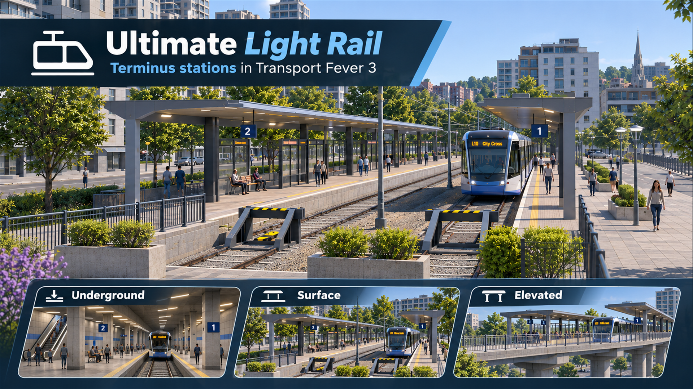
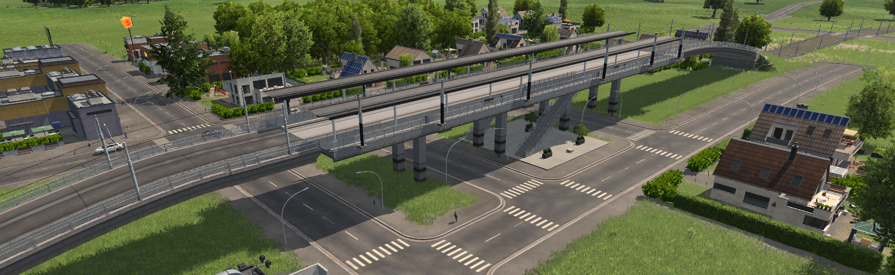
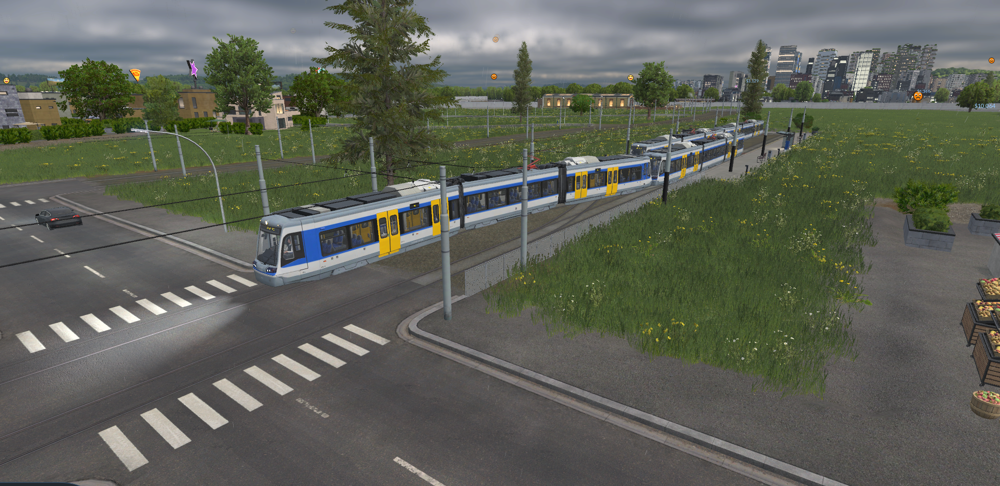
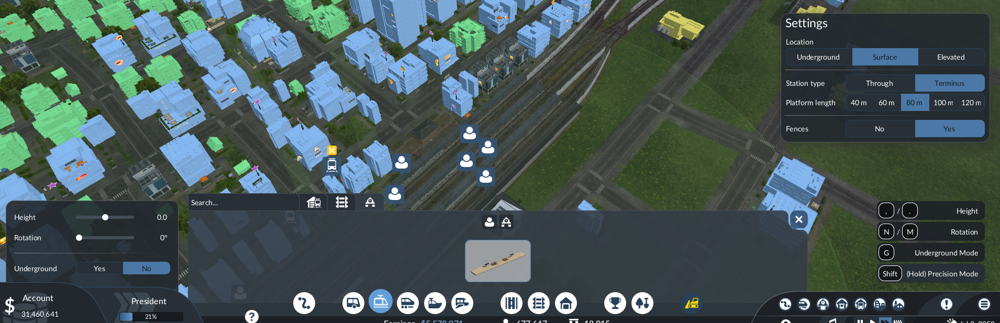
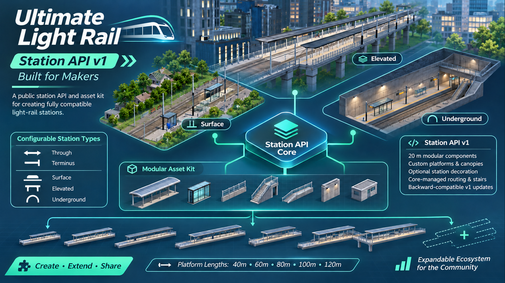

01 / AT STREET LEVEL
Surface
Low platforms, shelters and furniture. Through stations include a pedestrian underpass; termini have a landscaped forecourt.
GROUND LEVEL
One construction menu. Three station locations. The same tram-based network underneath.
Low platforms, shelters and furniture. Through stations include a pedestrian underpass; termini have a landscaped forecourt.
GROUND LEVELA fixed underground station hall, street access and pedestrian routes to both platforms. Connect with electric tram tunnels.
TRACKS AT −18mA concrete structure, covered platforms and one central street-level entrance. A concrete deck on pillars, with real stairs and street access.
TRACKS AT +12m

Low metal fences give your line a separate right of way. Connect directly to ordinary electric tram track and road crossings, with native tram traffic handling.
Use the existing tram depot and vehicles. This mod adds station and infrastructure options; it does not include a new vehicle fleet.
Choose a through layout for intermediate stops or a terminus with an integrated scissors crossover. Stop, change ends and depart without a visible turning loop.
Five lengths, in 20m steps. The crossover is determined by the station type; there is no separate switch option.

Open the original capture ↗
The standard stations use the same public API as your own designs. Supply visual components; let the core handle transport geometry.
Updates and extensions remain backward compatible with the documented v1 contract. If a change must break it, a new API version will appear alongside v1. Existing conforming v1 add-ons stay supported, without forced migration.
The core release number and API version are independent.
Read the Station API v1 documentation
Custom components replace ordinary complete 20m sections. Short infills and fixed stair zones remain core-owned. The API validates the schema; creators must test their own model geometry and colliders.
The core is all players need. The developer kit and example mod are separate, optional downloads for station creators.
The complete station family, fenced track and dedicated construction menu. Uses your existing tram vehicles.
Download core 1.0.0 ↓INSTALLABLE MOD / UI INCLUDEDThe API reference, compatibility policy, model dimensions, reference declarations and example sources.
Download developer kit ↓DOCUMENTATION + SOURCES / NOT A GAME MODA configurable component kit plus an asset-role example, both registered in the shared Light Rail menu.
Download example mod ↓OPTIONAL / REQUIRES THE COREEnable the core and load your save.
Open Light Rail, between Road and Rail.
Place a station, connect track and a tram depot.
Create a line and assign a tram that fits.
Updates and extensions preserve the documented v1 contract. Breaking changes use a new API version alongside v1; existing conforming v1 designs remain supported. Internal builders and generated UI recipes are not public extension points.
API v1 fixes two tracks, platform width and height, entrances, stairs and routes. Customise supported visual components instead. The underground hall is fixed.
Yes. Supply an explicit 20m canopy model through the component API. Surface defaults have no canopy; elevated defaults include one.
Keep the core and any asset mods enabled while their objects remain in a save. This release does not migrate development saves. Other mods replacing the same native construction UI may conflict. Current in-game testing uses Windows/Steam.
The station and track scenes are real gameplay captures. The API component board includes the actual standalone example in game. Its code panels and the separate API contract board are documentation graphics, not simulated gameplay.